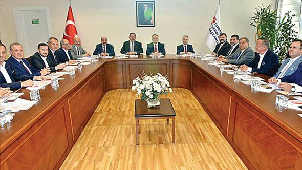

Hürriyet20 Temmuz 2017 - 22:22Son Güncelleme : 20 Temmuz 2017 - 22:25
Müteahhit ve bakanlardan imar buluşması

GAYRİMENKUL sektörünün önde gelen temsilcileri Çevre ve Şehircilik Bakanı Mehmet Özhaseki ve Maliye Bakanı
Naci Ağbal ile dün İstanbul’da bir araya geldi. 2 saati aşan görüşmede yeni imar yönetmeliği, kentsel
dönüşümün aksayan noktaları ve KDV konuları masaya yatırıldı.
İnşaatta tüm kuralları değiştiren yeni imar yönetmeliği geçtiğimiz günlerde açıklanmıştı. 1 Ekim’de uygulamaya başlanacak
yeni yönetmeliğe gayrimenkul sektörü temsilcileri tepki göstermiş, ‘yatırımların önü kesilir’ demişti.
Gelen tepki üzerine açıklama yapan Çevre ve Şehircilik Bakanı Mehmet Özhaseki ise imarı disipline
etmek dışında bir amaçlarının olmadığını söylemiş ve müteahhitlerle tekrar bir araya geleceğini ifade
etmişti. Beklenen buluşma dün gerçekleşti.
NELER KONUŞULDU?
Gayrimenkul sektörü temsilcileri yeni yönetmelikle ilgili taleplerini hem sözlü hem yazılı iletti ve kentsel dönüşüm aksayan
noktaları konusunda destek istedi. Görüşmenin olumlu ve verimli geçtiğini belirten sektör temsilcileri
yönetmeliğin yürürlüğe girmesi için önlerinde 2 ay olduğunu, bu sürede gerekli düzenlemelerin olacağına
inandıklarını söyledi. Bakan Özhaseki’nin de talepleri olumlu karşıladığı belirtiliyor. Özhaseki
görüşmede amaçlarının istismarların önününe geçmek olduğunu dile getirdi. Özhaseki daha önce de yaptığı
açıklamada “Hoyratça, haksızca kullanılan, istismara sebebiyet veren, imar çarpıklığı ve düzensizliğinin
önüne geçecek bir disiplin mekanizması getiriyoruz. 100 metrekarelik bir ev yapma hakkı olan birisi
bizim yönetmeliklerden kaynaklanan birtakım boşluklardan istifade ederek bunu 250 metrekareye kadar
çıkarabiliyordu” demişti.
KDV VE HARÇLAR
Sektör temsilcileri Naci Ağbal’dan ise tapu harçları ve KDV konularında düzenleme talep etti. Geçici KDV indirimleri değil,
kalıcı bir düzenleme beklentisi gündeme geldi. Markalı konut üreticileri, sektörde kayıt dışı sorununa
da dikkat çekti ve haksız rekabetin önlenmesini istedi. Müteahhitler ve kamu yetkilileri sorunların
ve aksaklıkların çözümü için yeniden bir araya gelecek.
KİMLER KATILDI?
Çevre ve Şehircilik Bakanı Bakanı Mehmet Özhaseki, Maliye Bakanı Naci Ağbal Gayrimenkul ve Gayrimenkul Yatırım Ortaklığı
Derneği (GYODER) Başkanı Feyzullah Yetgin, İstanbul İnşaatçılar Derneği (İNDER) Başkanı Nazmi Durbakayım,
Konut Geliştiricileri ve Yatırımcıları Derneği (KONUTDER) Başkanı Altan Elmas’ın yanı sıra Ali Ağaoğlu,
Ahmet Çelik, Ali Dumankaya, Aziz Torun, Özen Kuzu, Süleyman Çetinsaya ve Ziya Yılmaz gibi gayrimenkul
sektörünün önde gelen isimleri görüşmeye katıldı.